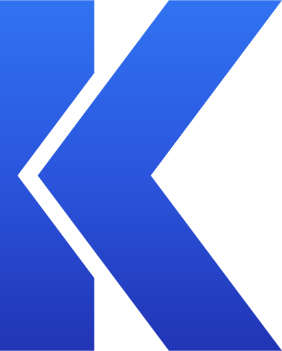
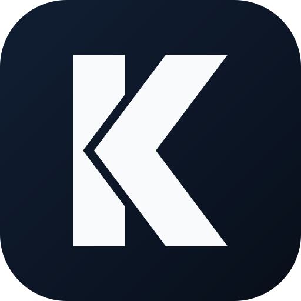
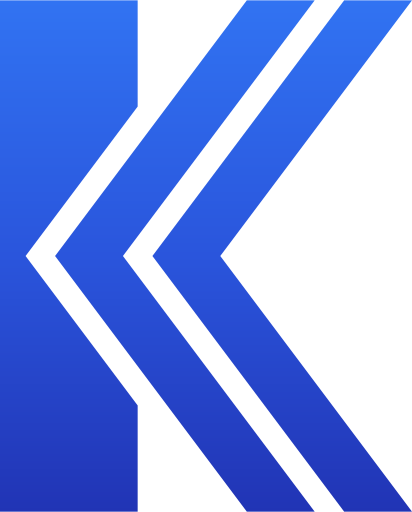
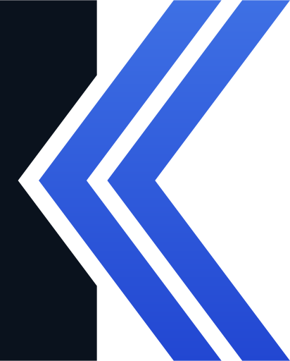

O vértice do V penetra a barra, que recebe um recorte paralelo de 6px — o mesmo respiro do mark original. Uma letra só, K e V travados.
Barra navy, chevron azul entrando nela. O recorte na barra desenha o contorno do vértice mesmo no escuro.

Versão em negativo sobre tile navy.

Uma fenda em V corre pelo centro do chevron: dois V aninhados dentro do K. Mais gráfico, sugere velocidade.

Barra navy com o chevron duplo azul. A fenda conecta com o recorte da barra num traço negativo contínuo.
A versão radical: o V rompe a coluna por completo e o vértice chega à borda esquerda. A barra vira duas peças.